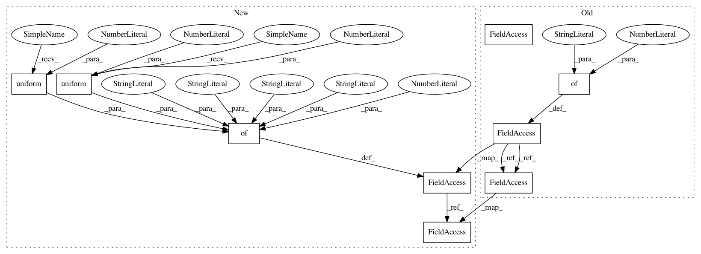

088f8ebb69e21c7759af44c6d207a266f4a5d175,python/ray/tune/examples/nevergrad_example.py,,,#,29
Before Change
args, _ = parser.parse_known_args()
ray.init()
config = {
"num_samples": 10 if args.smoke_test else 50,
"config": {
"steps": 100,
}
}
instrumentation = 2
parameter_names = ["height", "width"]
// With nevergrad v0.2.0+ the following is also possible:
// from nevergrad import instrumentation as inst
// instrumentation = inst.Instrumentation(
// height=inst.var.Array(1).bounded(0, 200).asfloat(),
// width=inst.var.OrderedDiscrete([0, 10, 20, 30, 40, 50]))
// parameter_names = None // names are provided by the instrumentation
optimizer = optimizerlib.OnePlusOne(instrumentation)
algo = NevergradSearch(
optimizer, parameter_names, metric="mean_loss", mode="min")
scheduler = AsyncHyperBandScheduler(metric="mean_loss", mode="min")
tune.run(
easy_objective,
name="nevergrad",
search_alg=algo,
scheduler=scheduler,
**config)
After Change
ray.init()
// The config will be automatically converted to Nevergrad"s search space
tune_kwargs = {
"num_samples": 10 if args.smoke_test else 50,
"config": {
"steps": 100,
"width": tune.uniform(0, 20),
"height": tune.uniform(-100, 100),
"activation": tune.choice(["relu", "tanh"])
}
}
// Optional: Pass the parameter space yourself
// space = ng.p.Dict(
// width=ng.p.Scalar(lower=0, upper=20),
// height=ng.p.Scalar(lower=-100, upper=100),
// activation=ng.p.Choice(choices=["relu", "tanh"])
// )
algo = NevergradSearch(
optimizer=ng.optimizers.OnePlusOne,
// space=space, // If you want to set the space manually
metric="mean_loss",
mode="min")
scheduler = AsyncHyperBandScheduler(metric="mean_loss", mode="min")
tune.run(
easy_objective,
name="nevergrad",
search_alg=algo,
scheduler=scheduler,
**tune_kwargs)
In pattern: SUPERPATTERN
Frequency: 3
Non-data size: 9
Instances
Project Name: ray-project/ray
Commit Name: 088f8ebb69e21c7759af44c6d207a266f4a5d175
Time: 2020-09-07
Author: krfricke@users.noreply.github.com
File Name: python/ray/tune/examples/nevergrad_example.py
Class Name:
Method Name:
Project Name: ray-project/ray
Commit Name: 088f8ebb69e21c7759af44c6d207a266f4a5d175
Time: 2020-09-07
Author: krfricke@users.noreply.github.com
File Name: python/ray/tune/examples/skopt_example.py
Class Name:
Method Name:
Project Name: ray-project/ray
Commit Name: 2fac66650d131b93041836c1566587a7a4800af6
Time: 2020-09-04
Author: krfricke@users.noreply.github.com
File Name: python/ray/tune/examples/ax_example.py
Class Name:
Method Name: